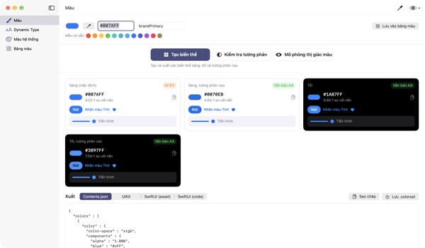
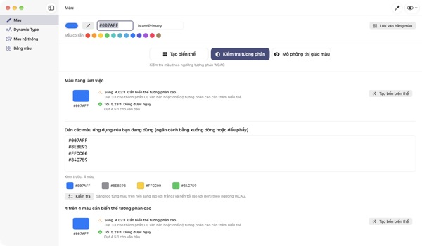
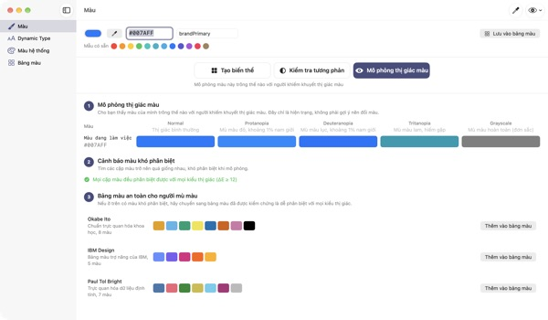
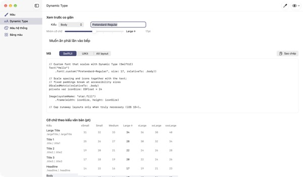

Nhập một màu,
nhận đủ bốn giao diện
Màu hệ thống tự đổi theo chế độ tối và Tăng tương phản, còn màu thương hiệu của bạn thì không. TetraTint lấy một màu ở chế độ sáng, tạo các biến thể Sáng, Sáng tương phản cao, Tối và Tối tương phản cao, rồi xuất thẳng sang Xcode.
Mọi tính năng đều miễn phí. Cần macOS 14 trở lên.

Thử màu thương hiệu của bạn
Dán một mã hex hoặc chạm vào mẫu có sẵn. Cùng cách tính với ứng dụng, bạn thấy ngay bốn biến thể và độ tương phản của từng cái.
Màu thương hiệu từng bị chìm trong chế độ tối?
Màu xanh chọn ở chế độ sáng trông xỉn trên nền đen, còn người bật Tăng tương phản thì khó đọc chữ. Tự dò màu cho từng giao diện rồi đo từng tỉ lệ tương phản tốn cả nửa ngày. TetraTint tạo biến thể theo đúng cách màu hệ thống thay đổi giữa các giao diện và cho bạn biết ngay từng biến thể có đạt hay không.
Kiểm tra mọi màu đang dùng trong một lần
Dán cả danh sách hex trong ứng dụng của bạn, từng màu sẽ được xếp loại: dùng được ngay, cần biến thể tương phản cao hay chỉ dùng để trang trí.
Một cú nhấp biến màu có vấn đề thành bốn biến thể lưu vào bảng màu. Rất tiện khi chuẩn bị nhãn trợ năng Đủ tương phản trên App Store.

Nhìn bằng mắt của người mù màu
Mô phỏng bảng màu với mù màu đỏ, mù màu lục, mù màu lam và thang xám, kèm cảnh báo những cặp màu trở nên khó phân biệt.
Tải các bảng màu an toàn cho người mù màu Okabe–Ito, IBM và Paul Tol chỉ với một cú nhấp, hoặc bấm nút hình con mắt ở góc trên bên phải để xem toàn bộ ứng dụng như vậy.

Phông chữ tùy chỉnh cũng theo cỡ chữ
Xem bảng 11 kiểu chữ ở 7 mức cỡ và kéo thanh trượt để thấy kích thước thật.
Nhập tên PostScript của phông, bạn nhận được mã UIKit, SwiftUI và @ScaledMetric, cùng mã đổi bố cục khi chữ lớn.

Bắt đầu với ba bước
- 1
Nhập màu gốc
Dán mã hex, dùng ống hút màu ở bất kỳ đâu trên màn hình hoặc chọn mẫu có sẵn.
- 2
Xem bốn biến thể
Đọc nhãn tương phản và chỉnh lại biến thể nào lệch tông thương hiệu bằng bộ chọn màu.
- 3
Xuất sang Xcode
Sao chép hoặc lưu thành Contents.json, .colorset hay mã UIKit và SwiftUI.
Cách tạo biến thể và ý nghĩa của nhãn
- Sáng (mặc định)
- Giữ nguyên màu bạn nhập
- Sáng, tương phản cao
- Tăng độ bão hòa một chút rồi làm tối đến khi đạt 4.5:1 trên nền trắng
- Tối
- Sáng và tươi hơn một chút (độ sáng +5, độ bão hòa +3)
- Tối, tương phản cao
- Làm sáng đến khi đạt 7:1 trên nền đen
- Văn bản AA
- Tương phản với nền từ 4.5:1, dùng được cho chữ
- UI 3:1
- Từ 3:1, dùng được cho nút và biểu tượng nhưng chưa đủ cho chữ
- Thấp
- Dưới 3:1, đừng dùng cho chữ, biểu tượng hay trạng thái
- Xuất
- Contents.json · .colorset · UIKit · SwiftUI, hoặc cả bảng màu trong một .xcassets
Giá trị tham chiếu của màu hệ thống lấy từ Human Interface Guidelines của Apple và có thể thay đổi theo bản cập nhật hệ điều hành. Trong ứng dụng phát hành, hãy dùng API màu hệ thống.
Câu hỏi thường gặp
Có thật sự miễn phí không?
Có. Mọi tính năng đều miễn phí, không cần tài khoản, không quảng cáo. Nếu thấy hữu ích, bạn có thể gửi tiền tip trong Cài đặt; tiền tip không mở thêm tính năng nào.
Biến thể tự tạo không hợp với tông thương hiệu.
Bạn chỉnh từng biến thể bằng bộ chọn màu trên thẻ của nó. Tạo lại tất cả sẽ bỏ các chỉnh sửa tay và tạo lại mọi thứ từ màu gốc.
Biến thể được tính theo quy tắc nào?
Theo cách màu hệ thống của Apple thực sự thay đổi giữa các giao diện: ở chế độ tối sáng và tươi hơn một chút, sáng tương phản cao đạt ít nhất 4.5:1 trên nền trắng, tối tương phản cao đạt ít nhất 7:1 trên nền đen.
Cảnh báo trong mô phỏng thị giác màu nghĩa là gì?
Nghĩa là trong mô phỏng đó, khác biệt giữa hai màu (ΔE) xuống dưới 12 và khó phân biệt. Đừng chỉ dựa vào màu: thêm biểu tượng, họa tiết hoặc nhãn chữ, hoặc chuyển sang bảng màu an toàn.
Làm sao để phông tùy chỉnh hỗ trợ Dynamic Type?
Trong mục Dynamic Type, nhập tên PostScript của phông và chọn kiểu chữ để nhận mã UIKit, SwiftUI và @ScaledMetric. Ở các cỡ trợ năng, Body lớn gấp hơn ba lần mặc định, nên tránh chiều cao cố định và lineLimit(1).
Màu đã xuất trông khác màu hệ thống trong ứng dụng.
Giá trị tham chiếu lấy từ tài liệu Human Interface Guidelines và có thể đổi giữa các phiên bản hệ điều hành. Với màu hệ thống, hãy luôn dùng API UIColor hoặc Color.
Bảng màu đã lưu nằm ở đâu?
Chỉ trên Mac của bạn. Không đồng bộ lên đám mây và không gửi đi đâu cả. Xem chính sách quyền riêng tư để biết thêm.
Màu lấy bằng ống hút có bị lưu lại không?
Không. Ứng dụng chỉ đọc giá trị màu tại điểm bạn chọn và dùng làm màu đang làm việc. Không lưu hay gửi ảnh màn hình.
Dùng được trên Mac nào?
macOS 14 (Sonoma) trở lên. Khi xuất, bạn tự chọn nơi lưu tệp.
Báo lỗi, góp ý tính năng hay cần hỏi gì, hãy gửi thư đến leeo@kakao.com. Thường chúng tôi trả lời trong 2–3 ngày.